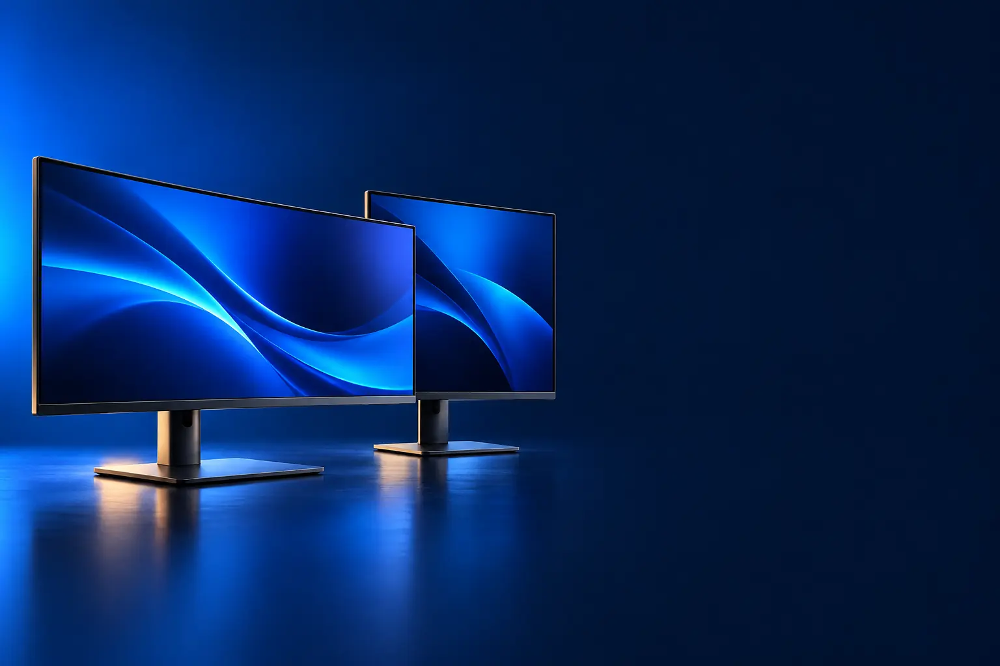

TRABALHO E ESTUDO
Melhor monitor custo-benefício para trabalho e home office
Tela maior e mais nítida para planilhas, reuniões e estudo.

Melhor custo-benefício para trabalhoSamsung S3 24" (100 Hz)
CURADORIA TECHAPROVADO · 2026
Monitor muda tudo no home office e nos jogos. Separamos 12 modelos em 2 perfis e dizemos para quem cada um vale a pena.

NOSSA LEITURA
Em 24", Full HD é nítido. Em 27", prefira QHD. Em 32", 4K. Para jogar, some a taxa de atualização: 144 Hz ou mais.
COMECE POR AQUI
TRABALHO E ESTUDO
Tela maior e mais nítida para planilhas, reuniões e estudo.
GAMER
Mais quadros por segundo, resposta rápida e imagem sem rasgos.

A FICHA, TRADUZIDA
01 - RESOLUÇÃO
Resolução é a quantidade de pontos (pixels) da tela. Full HD tem 1920 × 1080; QHD, 2560 × 1440; 4K, 3840 × 2160. Mais pontos deixam letras e imagens mais nítidas e cabem mais janelas.
Combine com o tamanho: 24" com Full HD, 27" com QHD, 32" com 4K. Fora disso, a imagem fica granulada ou as letras pequenas demais.
Para jogar em QHD ou 4K, a placa de vídeo precisa ser mais forte. Para trabalhar, qualquer notebook atual dá conta de 4K.
02 - TAXA DE ATUALIZAÇÃO
A taxa em hertz (Hz) diz quantas vezes por segundo a imagem é redesenhada. 60 Hz é o padrão; 144 Hz ou mais deixa jogos e até a rolagem de páginas bem mais suaves.
Para trabalho, 60 a 100 Hz bastam. Para jogos, 144 a 180 Hz é o ponto de equilíbrio; 240 Hz ou mais é para competitivo.
Para aproveitar, o computador precisa gerar esses quadros. Ligue o monitor pela porta DisplayPort ou HDMI certa e ative a taxa nas configurações.
03 - PAINEL
IPS tem cores fiéis e bom ângulo de visão. VA tem contraste melhor e preto mais profundo, ótimo para filmes. OLED acende cada ponto sozinho: preto perfeito e resposta instantânea.
Para trabalho, IPS. Para filmes e jogos em quarto escuro, VA ou OLED.
OLED pode marcar com imagens fixas por muitas horas: use proteção de tela e ocultação automática da barra de tarefas.
04 - CONEXÕES
HDMI e DisplayPort levam a imagem. Monitores com USB-C podem levar imagem, som, dados e carregar o notebook pelo mesmo cabo.
Para notebook, USB-C com carregamento (Power Delivery) deixa a mesa sem fios. Confira se o notebook tem saída de vídeo na porta USB-C.
Para jogos com mais de 144 Hz, prefira DisplayPort ou HDMI 2.1.
05 - CONFORTO
Recursos como luz azul reduzida (ComfortView, Eye Saver) e sem tremulação (flicker free) ajudam em longas horas de uso.
Ajuste de altura deixa o topo da tela na linha dos olhos, o que alivia o pescoço. Se o monitor não tiver, um suporte articulado resolve.
Sente a cerca de um braço de distância da tela e regule o brilho conforme a luz do ambiente.
A CURADORIA EM DETALHE
12 modelos da pesquisa
PERFIL · 6 MODELOS, DA ENTRADA AO TOP DE LINHA
Para trabalhar e estudar, o que pesa é tamanho, nitidez e conforto para os olhos em horas seguidas. Taxa de atualização alta importa pouco; resolução e qualidade de cor importam mais conforme o uso.
TRABALHO · CUSTO-BENEFÍCIO 1 de 6
Melhor custo-benefício para trabalho
24" IPS Full HD · 100 Hz · Eye Saver
Ver preço na AmazonPOR DENTRO DA ESCOLHA
Monitor de 24 polegadas com painel IPS Full HD, 100 Hz, modo Eye Saver e menos tremulação para proteger a visão, com entradas HDMI e VGA.
Tem entrada VGA, útil para computadores mais antigos.
| Tela | 24" IPS Full HD |
|---|---|
| Taxa | 100 Hz |
| Entradas | HDMI e VGA |
Fonte: ficha e descrição do anúncio, conferidas em 02/11/2026. Dados informados pelo fabricante.

TRABALHO · ALTERNATIVA 2 de 6
Outro caminho: monitor portátil
Portátil · USB-C ou HDMI · plug and play
Ver preço na AmazonPOR DENTRO DA ESCOLHA
Monitor portátil de 15,6 polegadas Full HD IPS antirreflexo, leve, que liga por um cabo USB-C (vídeo e energia) ou HDMI, sem instalar programas.
Tela de 15,6" Full HD IPS antirreflexo, leve, que transforma o notebook em duas telas em qualquer lugar. Um cabo USB-C leva vídeo e energia, sem instalar nada; se a porta USB-C do seu notebook não transmitir vídeo, use o HDMI.
| Tela | 15,6" IPS Full HD |
|---|---|
| Conexão | USB-C ou HDMI |
| Formato | Portátil |
Fonte: ficha e descrição do anúncio, conferidas em 02/11/2026. Dados informados pelo fabricante.

TRABALHO · INTERMEDIÁRIO 3 de 6
24" Full HD · 100 Hz · ComfortView Plus
Ver preço na AmazonPOR DENTRO DA ESCOLHA
Monitor profissional da Dell, de 24 polegadas Full HD e 100 Hz, com ComfortView Plus, que reduz a luz azul sem deixar a tela amarelada.
Monitor profissional de 24" Full HD para quem passa o dia na tela: os 100 Hz deixam rolagem e cursor mais suaves, e o ComfortView Plus reduz a luz azul sem amarelar a imagem.
| Tela | 24" Full HD |
|---|---|
| Taxa | 100 Hz |
| Conforto | ComfortView Plus |
Fonte: ficha e descrição do anúncio, conferidas em 02/11/2026. Dados informados pelo fabricante.

POR DENTRO DA ESCOLHA
Monitor de 32 polegadas com resolução 4K UHD, HDR10 e FreeSync, para ver muito conteúdo na tela e vídeos com detalhe.
4K em 32" é a combinação que mais aumenta o espaço útil da tela para trabalhar.
| Tela | 32" 4K UHD |
|---|---|
| Taxa | 60 Hz |
| HDR | HDR10 |
Fonte: ficha e descrição do anúncio, conferidas em 02/11/2026. Dados informados pelo fabricante.

TRABALHO · AVANÇADO 5 de 6
100% sRGB e Rec. 709 · USB-C · CAD/CAM e Darkroom
Ver preço na AmazonPOR DENTRO DA ESCOLHA
Monitor de 27 polegadas QHD para designers, com tecnologia AQCOLOR que cobre 100% de sRGB e Rec. 709 (Delta E ≤ 3), USB-C com vídeo, dados e energia, KVM e modos de visualização como CAD/CAM e Darkroom.
A precisão de cor é o que separa um monitor de criação de um comum.
| Tela | 27" QHD IPS |
|---|---|
| Cores | 100% sRGB e Rec. 709 |
| Conexão | USB-C |
Fonte: ficha e descrição do anúncio, conferidas em 02/11/2026. Dados informados pelo fabricante.

TRABALHO · TOP DE LINHA 6 de 6
Top de linha para trabalho
4K · 120 Hz · Thunderbolt 4 · hub USB-C 140 W
Ver preço na AmazonPOR DENTRO DA ESCOLHA
Monitor 4K de 27 polegadas com 99% de DCI-P3, DisplayHDR 600, 120 Hz, switch KVM e hub USB-C de até 140 W com Thunderbolt 4: um cabo liga e carrega o notebook.
O hub de 140 W transforma o monitor em estação de trabalho para o notebook.
| Tela | 27" 4K IPS Black |
|---|---|
| Taxa | 120 Hz |
| Conexão | Thunderbolt 4, USB-C 140 W |
Fonte: ficha e descrição do anúncio, conferidas em 02/11/2026. Dados informados pelo fabricante.
PERFIL · 6 MODELOS, DA ENTRADA AO TOP DE LINHA
Monitores gamer mostram mais quadros por segundo (Hz) e respondem mais rápido, o que deixa os jogos mais fluidos. Os mais caros sobem a resolução para QHD e usam telas OLED, com preto perfeito.
GAMER · CUSTO-BENEFÍCIO 1 de 6
Melhor custo-benefício gamer
180 Hz · 1 ms · IPS · G-Sync e FreeSync
Ver preço na AmazonPOR DENTRO DA ESCOLHA
Monitor gamer de 24 polegadas Full HD IPS com 180 Hz, 1 ms (GtG), HDR10, 99% sRGB e compatibilidade com NVIDIA G-Sync e AMD FreeSync.
180 Hz por preço de monitor comum.
| Tela | 24" Full HD IPS |
|---|---|
| Taxa | 180 Hz |
| Resposta | 1 ms |
Fonte: ficha e descrição do anúncio, conferidas em 02/11/2026. Dados informados pelo fabricante.

GAMER · INTERMEDIÁRIO 2 de 6
QHD · 165 Hz · curvo 1000R · HDR10
Ver preço na AmazonPOR DENTRO DA ESCOLHA
Tela curva de 27 polegadas com curvatura 1000R, resolução QHD, 165 Hz, 1 ms (MPRT), HDR10, FreeSync e ajuste de altura.
O degrau sobre o 24" é a resolução: em 27", Full HD fica granulado; QHD fica nítido.
| Tela | 27" QHD curva |
|---|---|
| Taxa | 165 Hz |
| Extras | Ajuste de altura |
Fonte: ficha e descrição do anúncio, conferidas em 02/11/2026. Dados informados pelo fabricante.

GAMER · AVANÇADO 3 de 6
Ultra WQHD · 165 Hz · curvo · FreeSync Premium
Ver preço na AmazonPOR DENTRO DA ESCOLHA
Monitor curvo ultrawide de 34 polegadas, Ultra WQHD, 165 Hz e 1 ms, com FreeSync Premium, HDMI e DisplayPort.
Ultrawide imerge mais e substitui dois monitores no trabalho.
| Tela | 34" Ultra WQHD curva |
|---|---|
| Taxa | 165 Hz |
| Formato | 21:9 |
Fonte: ficha e descrição do anúncio, conferidas em 02/11/2026. Dados informados pelo fabricante.

GAMER · AVANÇADO 4 de 6
QHD · Fast IPS · 180 Hz · G-Sync
Ver preço na AmazonPOR DENTRO DA ESCOLHA
Monitor gamer de 27 polegadas QHD com painel Fast IPS, 180 Hz, tecnologia G-Sync, compatível com consoles, com DisplayPort, HDMI e suporte ajustável.
Junta QHD, 180 Hz e cores de painel Fast IPS: imagem nítida e movimento suave nos jogos rápidos. Tem G-Sync, é compatível com consoles e vem com suporte ajustável.
| Tela | 27" QHD Fast IPS |
|---|---|
| Taxa | 180 Hz |
| Sync | G-Sync |
Fonte: ficha e descrição do anúncio, conferidas em 02/11/2026. Dados informados pelo fabricante.

GAMER · AVANÇADO 5 de 6
OLED QHD · 240 Hz · 0,03 ms · True Black 400
Ver preço na AmazonPOR DENTRO DA ESCOLHA
Tela OLED QHD de 27 polegadas com 240 Hz, 0,03 ms de resposta, VESA DisplayHDR True Black 400, 98,5% do DCI-P3 e compatibilidade com G-Sync e FreeSync Premium Pro.
OLED é o maior salto de imagem em monitores: cada pixel acende e apaga sozinho.
| Tela | 27" OLED QHD |
|---|---|
| Taxa | 240 Hz |
| Resposta | 0,03 ms |
Fonte: ficha e descrição do anúncio, conferidas em 02/11/2026. Dados informados pelo fabricante.

GAMER · TOP DE LINHA 6 de 6
Top de linha gamer
QD-OLED QHD · 280 Hz · antirreflexo · USB-C
Ver preço na AmazonPOR DENTRO DA ESCOLHA
Monitor QD-OLED QHD de 27 polegadas com 280 Hz, 0,03 ms, revestimento antirreflexo, HDMI 2.1, DisplayPort 1.4, USB-C e suporte com ajuste de altura, inclinação, rotação e giro.
O topo da lista: QD-OLED com as cores mais vivas e 280 Hz.
| Tela | 27" QD-OLED QHD |
|---|---|
| Taxa | 280 Hz |
| Conexões | HDMI 2.1, DP 1.4, USB-C |
Fonte: ficha e descrição do anúncio, conferidas em 02/11/2026. Dados informados pelo fabricante.
Nenhum modelo encontrado. Tente outro termo ou volte para Todos.
LADO A LADO
| Modelo | Perfil | Posição | Tela | Destaque |
|---|---|---|---|---|
| Samsung S3 24" (100 Hz) | Trabalho | Custo-benefício | 24" IPS Full HD | 24" IPS Full HD · 100 Hz · Eye Saver |
| ARZOPA Portátil 15,6" Full HD | Trabalho | Alternativa | 15,6" IPS Full HD | Portátil · USB-C ou HDMI · plug and play |
| Dell Pro 24 Plus (P2425H) | Trabalho | Intermediário | 24" Full HD | 24" Full HD · 100 Hz · ComfortView Plus |
| LG 32" 4K UHD (32UR500) | Trabalho | Avançado | 32" 4K UHD | 32" 4K · HDR10 · FreeSync |
| BenQ PD2705Q 27" QHD | Trabalho | Avançado | 27" QHD IPS | 100% sRGB e Rec. 709 · USB-C · CAD/CAM e Darkroom |
| Dell UltraSharp 27" 4K (U2725QE) | Trabalho | Top de linha | 27" 4K IPS Black | 4K · 120 Hz · Thunderbolt 4 · hub USB-C 140 W |
| LG UltraGear 24GS60F 24" | Gamer | Custo-benefício | 24" Full HD IPS | 180 Hz · 1 ms · IPS · G-Sync e FreeSync |
| Samsung Odyssey G5 27" QHD | Gamer | Intermediário | 27" QHD curva | QHD · 165 Hz · curvo 1000R · HDR10 |
| Samsung Odyssey G5 34" Ultrawide | Gamer | Avançado | 34" Ultra WQHD curva | Ultra WQHD · 165 Hz · curvo · FreeSync Premium |
| Alienware 27" QHD 180 Hz (AW2725DM) | Gamer | Avançado | 27" QHD Fast IPS | QHD · Fast IPS · 180 Hz · G-Sync |
| LG UltraGear OLED 27GX704A | Gamer | Avançado | 27" OLED QHD | OLED QHD · 240 Hz · 0,03 ms · True Black 400 |
| Alienware 27" QD-OLED 280 Hz (AW2725D) | Gamer | Top de linha | 27" QD-OLED QHD | QD-OLED QHD · 280 Hz · antirreflexo · USB-C |
CONSIDERAÇÕES FINAIS
Monitores portáteis com anúncios inconsistentes ou estoque baixo ficaram de fora. O monitor portátil da lista está no perfil de trabalho.
O Samsung S3 24" para trabalho e o LG UltraGear 24GS60F para jogos.
24" para mesas comuns; 27" se você senta a mais de 60 cm; 32" para 4K.
Em 27" ou 32", sim: cabem mais janelas e as letras ficam mais nítidas.
Nos jogos, muita. No trabalho, deixa a rolagem mais suave, mas não é essencial.
Porque ele muda várias vezes por dia. O botão leva ao valor atualizado na loja.
TRANSPARÊNCIA EDITORIAL
Separamos os monitores pelo uso principal e montamos uma escada de preço em cada perfil. Cada modelo precisa responder com clareza "para quem ele é o certo".
Em cada perfil há modelos em faixas de preço diferentes, e cada degrau precisa entregar algo que o anterior não entrega. Dois modelos com a mesma proposta não entram juntos.
Ficha e especificações foram conferidas nos anúncios das lojas em 02/11/2026.
Os links de compra desta página são de afiliado: se você comprar por eles, o TechAprovado pode ganhar uma comissão, sem custo adicional para você. Isso não muda a ordem nem a escolha dos produtos.
📲 GUIAS E DICAS NO SEU FEED
Dicas práticas antes de comprar, em carrosséis e vídeos curtos, sempre com link para o guia completo.